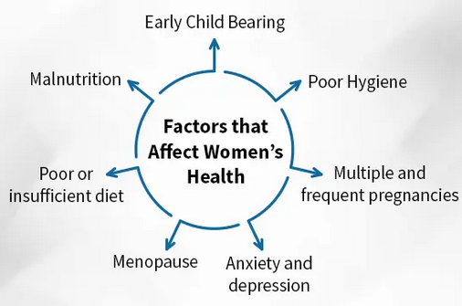

Women's Rights
Right to health

Government of India implements various schemes/initiatives to make healthcare more accessible to all throughout the country including women, rural and SC/ST population.These schemes/initiatives include:
-
Surakshit Matritva Aashwasan (SUMAN)
-
It provides assured, dignified, respectful and quality healthcare at no cost and zero tolerance for denial of services for every woman and newborn visiting public health facilities to end all preventable maternal and newborn deaths.
-
Janani Shishu Suraksha Karyakram (JSSK)
- every pregnant woman is entitled to free delivery, including caesarean section, in public health institutions along with the provision of free transport, diagnostics, medicines, blood, other consumables & diet.
-
Pradhan Mantri Surakshit Matritva Abhiyan (PMSMA)
- It provides pregnant women a fixed day, free of cost assured and quality antenatal check up by a Specialist/Medical Officer on the 9th day of every month.